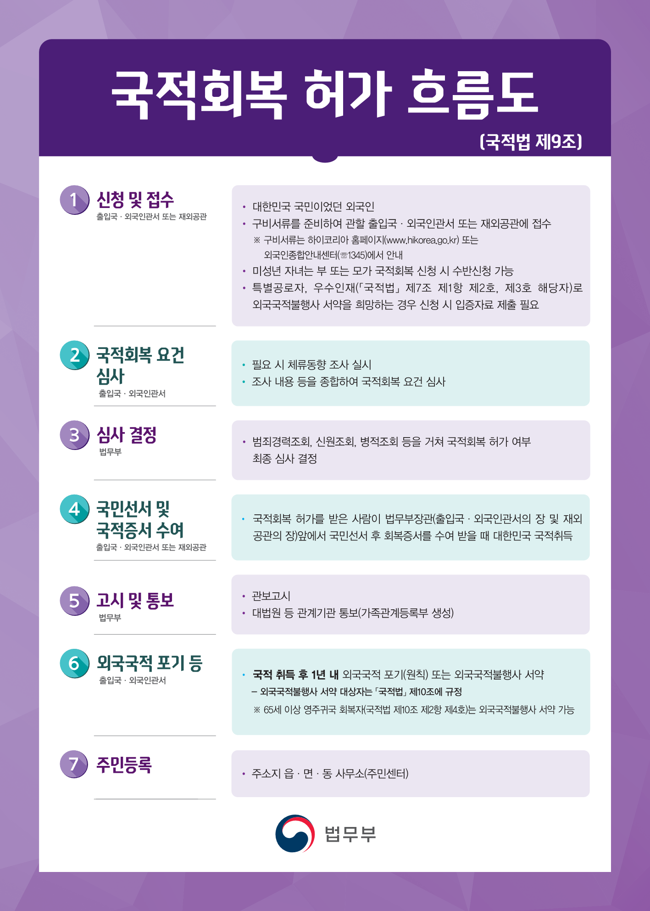
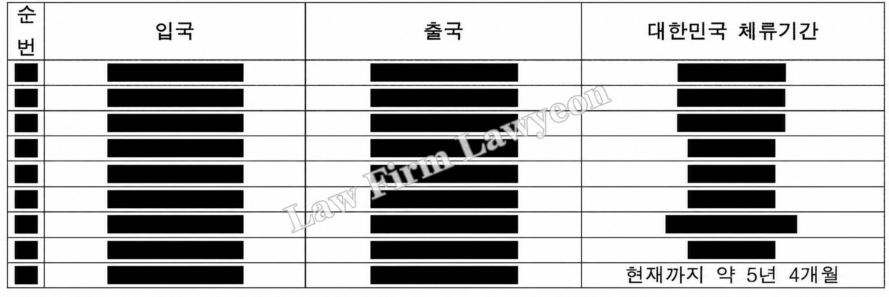

Former Korean nationals may apply for reinstatement of Korean nationality before turning 65. Age 65 is not a minimum age for reinstatement. It is an age requirement for an exception that allows qualifying overseas Koreans returning to settle permanently in Korea to retain their foreign nationality.
Requirements reviewed for nationality reinstatement
Under the Nationality Act, the review examines whether the applicant falls within any of the following four categories:
- a person who has caused harm to the State or society
- a person who does not meet the good-conduct requirement
- a person who lost or renounced Korean nationality for the purpose of evading military service
- a person whose reinstatement the Minister of Justice considers inappropriate for national security, public order or public welfare.
For male applicants, the review often examines whether Korean nationality was lost for the purpose of evading military service. Where an applicant has a criminal record, the review principally concerns the good-conduct requirement. The authorities investigate relevant records and facts, including previous entries into and departures from Korea and foreign countries and the applicant’s principal place of residence.
As the reviewing department conducts its investigation, it may request additional documents where necessary. It is therefore important to submit, at the time of application, a statement explaining the relevant facts together with supporting materials that objectively and clearly establish those facts and are consistent with that explanation.
People domiciled abroad may also apply through a Korean diplomatic mission, so not every applicant must remain in Korea during the review. For an application filed in Korea, even where a law firm has been instructed, the applicant must respond to factual inquiries and requests for personal attendance or documents. Travel abroad after filing is not prohibited in itself, but its duration and purpose may affect the review. It is therefore advisable to have legal counsel review the travel plans in advance.

The obligation to renounce foreign nationality after reinstatement
Under the Nationality Act, a person who acquires Korean nationality through reinstatement may make a pledge not to exercise foreign nationality in Korea instead of renouncing it if the person establishes eligibility under one of the following categories:
| Category | Applicable requirements |
|---|---|
| Special contributions | a person who has made special contributions to Korea |
| Exceptional talent | a person with exceptional abilities in science, the economy, culture, sport or another specified field who is recognized as likely to contribute to Korea’s national interests |
| Overseas adoption | a person adopted by foreigners before reaching adulthood who subsequently acquired foreign nationality and continued living abroad before receiving reinstatement approval |
| Permanent return at age 65 or over | a person who lived abroad and returned to Korea at age 65 or over for permanent settlement before receiving reinstatement approval |
| Renunciation difficulties under foreign laws or systems | a person who, despite their intention to renounce, has difficulty renouncing foreign nationality because of the foreign country’s laws or systems. |
Applicants relying on special contributions or exceptional talent must be domiciled in Korea and recognized by the Minister of Justice as meeting the applicable requirements. Applicants seeking to make the non-exercise pledge on either ground submit supporting evidence for review when applying for reinstatement.
Where a foreign country’s laws or systems delay renunciation, the applicable requirements include starting the renunciation process within three months of acquiring Korean nationality and submitting evidence that the process cannot readily be completed within one year. A person who makes the pledge on this ground must submit proof without delay once renunciation is completed.
A person who does not qualify for an exception must renounce foreign nationality within one year of acquiring Korean nationality and submit proof without delay. Failure to fulfil the renunciation obligation results in loss of Korean nationality when that period expires.
The date of acquiring Korean nationality is generally the date on which the person takes the oath of allegiance and receives the nationality reinstatement certificate following approval. Whether foreign nationality was renounced within the deadline and whether proof has been submitted are checked separately. A person eligible for the pledge must also renounce foreign nationality or make the pledge within one year of acquiring Korean nationality.

Court decisions concerning nationality reinstatement
In setting out the standard for determining whether Korean nationality was lost for the purpose of evading military service, a court stated: “A vague suspicion inferred merely from the fact that a man subject to military service lost Korean nationality and consequently became exempt from that obligation is insufficient. To refuse reinstatement to an applicant who was formerly a Korean national on the ground that Korean nationality was lost for the purpose of evading military service, there must be circumstances giving strong grounds to suspect that such a purpose existed at the time of nationality loss, after considering together the purpose of the person’s stay abroad; the respective timing, purposes and circumstances of acquiring foreign nationality and losing Korean nationality; and the circumstances following acquisition of foreign nationality.”
In setting out the standard for assessing good conduct, a court stated: “A ‘person who does not meet the good-conduct requirement’ means a person who lacks the character and conduct necessary to be accepted again as a member of Korean society without impediment. This must be assessed by considering together the applicant’s sex, age, family, occupation, career, criminal record and other circumstances.”
Deciding whether and when to apply for nationality reinstatement
Compared with immigration matters, nationality matters can involve a lengthy review. Applicants who file in Korea must be able to respond to necessary factual inquiries and requests for personal attendance or documents during that review. Where issues concerning an intention to evade military service or good conduct may arise, it is therefore advisable to review the evidence available for submission and the anticipated review issues before applying.
A review of the relevant documents often reveals matters that differ from the applicant’s original plans. We therefore recommend obtaining advice from a legal professional before proceeding.
Law Firm Lawyeon Immigration Law Center provides legal services specialized in the integrated handling of Korean immigration and visa matters together with criminal cases and immigration-violation reviews, built on extensive case experience, professional networks, and practical knowledge.
The Center brings together attorneys Junwoo Min, Dohyun Nam, and Seungchul Kim, criminal-law specialists with extensive immigration advisory experience, and Senior Advisor Taemin Ahn. Mr Ahn has served at the Seoul Global Center, headed a Ministry of Justice Global Start-up Immigration Center, and served on the Foreign Workers' Rights Protection Council of the Seoul Regional Employment and Labor Administration. Together, they established Law Firm Lawyeon's dedicated immigration practice.
In particular, for departure orders and entry-ban dispositions that follow a final criminal conviction, the Center presents effective solutions through an integrated strategy spanning criminal defense, objections to the disposition, and applications to lift the entry ban, and it supports stable business activity in Korea by managing many clients' immigration risk.
This article provides general information and is not legal advice on an individual matter.